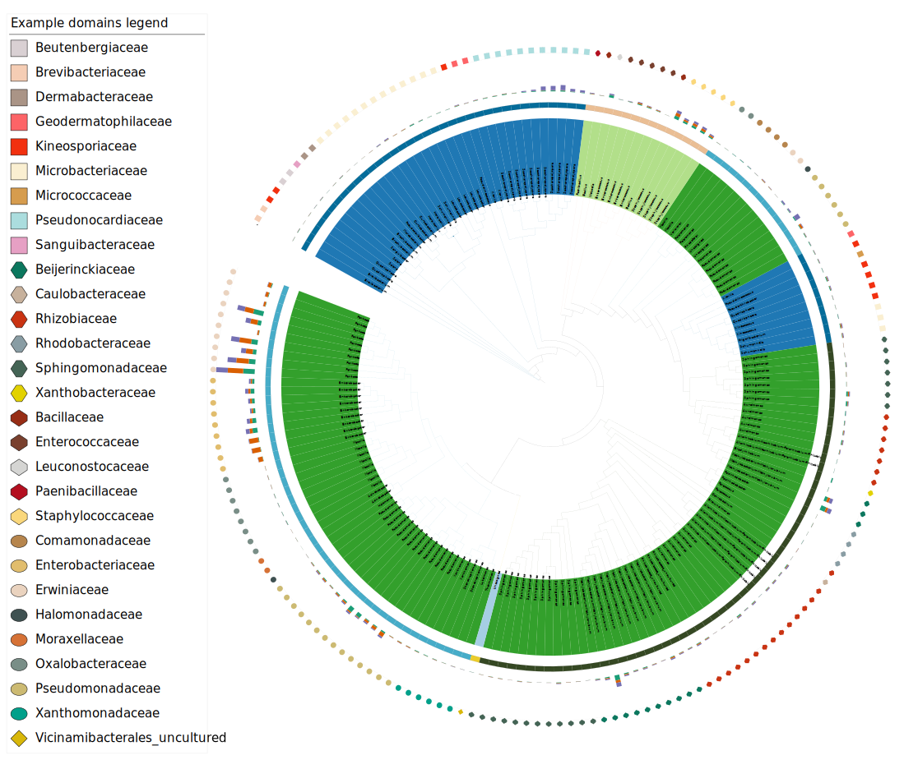

Comparison_table2itol
Comparison_table2itol.Rmdtable2itol
[TOC]
#!/bin/bash
###Zhou xin
## Beautifying evolutionary tree
## Scheme 1. Outer ring color, shape classification and abundance scheme
# annotation.txt OTU correspond to species annotations and abundance，
# -a Cannot find the input column will terminate the run (not executed by default)
#-c Converts an integer column to a factor or a number with a decimal point
#-t Transforms the ID column when deviating from the hint label
#-w Color band, area width, etc
#-D Output directory
#-i OTU column name
#-l OTU display names such as species/genus/family names
# cd ${wd}/result/tree
Rscript ./table2itol.R -a -c double -D plan1 -i OTUID -l Genus -t %s -w 0.5 annotation.txt
# Generate a separate file for each column in the comment file
## Scheme 2. Generate annotation file of abundance column bar chart
Rscript ./table2itol.R -a -d -c none -D plan2 -b Phylum -i OTUID -l Genus -t %s -w 0.5 annotation.txt
## Scheme 3. Generate annotation file of heat map
Rscript ./table2itol.R -c keep -D plan3 -i OTUID -t %s otutab_high.mean
## Scheme 4. Convert integers into factors to generate comment files
Rscript ./table2itol.R -a -c factor -D plan4 -i OTUID -l Genus -t %s -w 0 annotation.txt
# Return to the working directory
cd ${wd}table2itol workflow diagram
itol.toolkit
library(itol.toolkit) # main package
library(dplyr) # data manipulation
library(data.table) # file read
library(ape) # tree operation
library(stringr) # string operation
library(tidyr) # data manipulation
tree_1 <- system.file("extdata","dataset4/otus.contree",package = "itol.toolkit")
hub_1 <- create_hub(tree_1)
data_file_1 <- system.file("extdata","dataset4/annotation.txt",package = "itol.toolkit")
data_file_2 <- system.file("extdata","dataset4/otutab_high.mean",package = "itol.toolkit")
data_1 <- data.table::fread(data_file_1)
data_2 <- data.table::fread(data_file_2)itol.toolkit workflow diagram
# relabel by genus
unit_1 <- create_unit(data = data_1 %>% select(ID, Genus),
key = "rep_Zhou_1_labels",
type = "LABELS",
tree = tree_1)
write_unit(unit_1)Labels example with genus names
# tree_colors range by phylum
unit_2 <- create_unit(data = data_1 %>% select(ID, Phylum),
key = "rep_Zhou_2_range",
type = "TREE_COLORS",
subtype = "range",
tree = tree_1)
write_unit(unit_2)Tree colors by phylum
# color_strip by class
set.seed(123)
unit_3 <- create_unit(data = data_1 %>% select(ID, Class),
key = "rep_Zhou_3_strip",
type = "DATASET_COLORSTRIP",
color = "wesanderson",
tree = tree_1)
unit_3@common_themes$basic_theme$margin <- 50Color strip by class
# simple_bar by NS
unit_4 <- create_unit(data = data_1 %>% select(ID, South_America, Asia, North_America),
key = "rep_Zhou_4_multibar",
type = "DATASET_MULTIBAR",
tree = tree_1)
unit_4@specific_themes$basic_plot$size_max <- 100
Multibar chart example
#Adding comment tag
unit_5 <- create_unit(data = data_1 %>% select(ID, Class, Family),
key = "rep_Zhou_5_binary",
type = "DATASET_DOMAINS",
color = "wesanderson",
tree = tree_1)

Pie chart example
New in v1.1.8
Pencil Plot
set.seed(123)
unit_6 <- create_unit(data = data_1 %>% select(ID, Class, Family),
key = "New_in_v1.1.8",
type = "DATASET_DOMAINS",
color = "wesanderson",
shape = "TL",
tree = tree_1)
write_unit(unit_6)Final combined visualization
Comparison between itol.toolkit and table2itol
| Function | itol.toolkit | table2itol |
|---|---|---|
| Support template types | 23 | 11 |
| Usage | interactive R or script | command |
| Maxiuim color platter | 76 | 40 |
| Theme adjustable | TRUE | FALSE |
| Share format | All-in-one hub object | separated code and data |
| Can extact data from template files | TRUE | FALSE |
| Output files | Flexibel | Output non-related files (Non-modifiable workflow) |